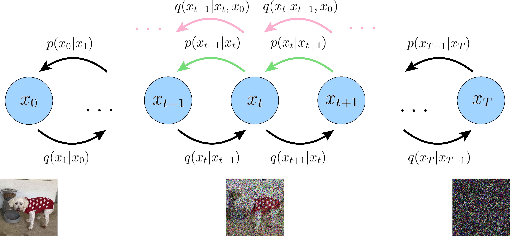

A GAN is a deep neural network which consists of two networks, a so-called generator network and a discriminating network, or just discriminator. Through several iterations of generation and discrimination, the idea is that these networks will train each other, while also trying to outsmart each other.
In its simplest version, the two networks could be two standard neural networks with a given number of hidden of hidden layers and parameters to train. The generator we have trained can then be used to produce new images.
For a GAN we have:
At the end of the training, the generator can be used to generate for example new images. In this sense we have trained a model which can produce new samples. We say that we have implicitely defined a probability.
GANs are generally a form of unsupervised machine learning, although they also incorporate aspects of supervised learning. Internally the discriminator sets up a supervised learning problem. Its goal is to learn to distinguish between the two classes of generated data and original data. The generator then considers this classification problem and tries to find adversarial examples, that is samples which will be misclassified by the discriminator.
One can also design GAN architectures which work in a semi-supervised learning setting. A semi-supervised learning environment includes both labeled and unlabeled data. See https://proceedings.neurips.cc/paper_files/paper/2016/file/8a3363abe792db2d8761d6403605aeb7-Paper.pdf for a further discussion.
Thus, GANs can be used both on labeled and on unlabeled data and are used in three most commonly used contexts, that is
These two models compete against each other during the training process: the generator \( G \) is trying hard to trick the discriminator, while the critic model \( D \) is trying hard not to be cheated. This interesting zero-sum game between two models motivates both to improve their functionalities.
We define a probability \( p_{\boldsymbol{h}} \) which is used by the generator. Usually it is given by a uniform distribution over the input \( \boldsymbol{h} \). Thereafter we define the distribution of the generator which we want to train, \( p_{g} \) This is the generator's distribution over the data \( \boldsymbol{x} \). Finally, we have the distribution \( p_{r} \) over the real sample \( \boldsymbol{x} \)
On one hand, we want to make sure the discriminator \( D \)'s decisions over real data are accurate by maximizing \( \mathbb{E}_{\boldsymbol{x} \sim p_{r}(\boldsymbol{x})} [\log D(\boldsymbol{x})] \). Meanwhile, given a fake sample \( G(\boldsymbol{h}), \boldsymbol{h} \sim p_{\boldsymbol{h}}(\boldsymbol{h}) \), the discriminator is expected to output a probability, \( D(G(\boldsymbol{h})) \), close to zero by maximizing \( \mathbb{E}_{\boldsymbol{h} \sim p_{\boldsymbol{h}}(\boldsymbol{h})} [\log (1 - D(G(\boldsymbol{h})))] \).
On the other hand, the generator is trained to increase the chances of \( D \) producing a high probability for a fake example, thus to minimize \( \mathbb{E}_{\boldsymbol{h} \sim p_{\boldsymbol{h}}(\boldsymbol{h})} [\log (1 - D(G(\boldsymbol{h})))] \).
When combining both aspects together, \( D \) and \( G \) are playing a minimax game in which we should optimize the following loss function:
$$ \begin{aligned} \min_G \max_D L(D, G) & = \mathbb{E}_{\boldsymbol{x} \sim p_{r}(\boldsymbol{x})} [\log D(\boldsymbol{x})] + \mathbb{E}_{\boldsymbol{h} \sim p_{\boldsymbol{h}}(\boldsymbol{h})} [\log(1 - D(G(\boldsymbol{h})))] \\ & = \mathbb{E}_{\boldsymbol{x} \sim p_{r}(\boldsymbol{x})} [\log D(\boldsymbol{x})] + \mathbb{E}_{\boldsymbol{x} \sim p_g(\boldsymbol{x})} [\log(1 - D(\boldsymbol{x})] \end{aligned} $$where \( \mathbb{E}_{\boldsymbol{x} \sim p_{r}(\boldsymbol{x})} [\log D(\boldsymbol{x})] \) has no impact on \( G \) during gradient descent updates.
Now we have a well-defined loss function. Let's first examine what is the best value for \( D \).
$$ L(G, D) = \int_{\boldsymbol{x}} \bigg( p_{r}(\boldsymbol{x}) \log(D(\boldsymbol{x})) + p_g (\boldsymbol{x}) \log(1 - D(\boldsymbol{x})) \bigg) d\boldsymbol{x} $$Since we are interested in what is the best value of \( D(\boldsymbol{x}) \) to maximize \( L(G, D) \), let us label
$$ \tilde{\boldsymbol{x}} = D(\boldsymbol{x}), A=p_{r}(\boldsymbol{x}), B=p_g(\boldsymbol{x}) $$The integral (we can safely ignore the integral because \( \boldsymbol{x} \) is sampled over all the possible values) is:
$$ \begin{align*} f(\tilde{\boldsymbol{x}}) & = A \log{\tilde{\boldsymbol{x}}} + B \log{(1-\tilde{\boldsymbol{x}})} \\ \frac{d f(\tilde{\boldsymbol{x}})}{d \tilde{\boldsymbol{x}}} & = A \frac{1}{\tilde{\boldsymbol{x}}} - B\frac{1}{1 - \tilde{\boldsymbol{x}}} \\ & = \frac{A - (A + B)\tilde{\boldsymbol{x}}} {\tilde{\boldsymbol{x}} (1 - \tilde{\boldsymbol{x}})}. \\ \end{align*} $$If we set
$$ \frac{d f(\tilde{\boldsymbol{x}})}{d \tilde{\boldsymbol{x}}} = 0, $$we get the best value of the discriminator:
$$ D^*(\boldsymbol{x}) = \tilde{\boldsymbol{x}}^* =\frac{A}{A + B} = \frac{p_{r}(\boldsymbol{x})}{p_{r}(\boldsymbol{x}) + p_g(\boldsymbol{x})} \in [0, 1]. $$Once the generator is trained to its optimal, \( p_g \) gets very close to \( p_{r} \). When \( p_g = p_{r} \), \( D^*(\boldsymbol{x}) \) becomes \( 1/2 \). We will observe this when running the code from last week (see jupyter-notebook from week 15).
When both \( G \) and \( D \) are at their optimal values, we have \( p_g = p_{r} \) and \( D^*(\boldsymbol{x}) = 1/2 \), the loss function becomes
$$ \begin{align*} L(G, D^*) &= \int_{\boldsymbol{x}} \bigg( p_{r}(\boldsymbol{x}) \log(D^*(\boldsymbol{x})) + p_g (\boldsymbol{x}) \log(1 - D^*(\boldsymbol{x})) \bigg) d\boldsymbol{x} \\ &= \log \frac{1}{2} \int_{\boldsymbol{h}} p_{r}(\boldsymbol{x}) d\boldsymbol{x} + \log \frac{1}{2} \int_{\boldsymbol{x}} p_g(\boldsymbol{x}) d\boldsymbol{x} \\ &= -2\log2 \end{align*} $$The JS divergence between \( p_{r} \) and \( p_g \) can be computed as:
$$ \begin{align*} D_{JS}(p_{r} \| p_g) =& \frac{1}{2} D_{KL}(p_{r} || \frac{p_{r} + p_g}{2}) + \frac{1}{2} D_{KL}(p_{g} || \frac{p_{r} + p_g}{2}) \\ =& \frac{1}{2} \bigg( \log2 + \int_x p_{r}(\boldsymbol{x}) \log \frac{p_{r}(\boldsymbol{x})}{p_{r} + p_g(\boldsymbol{x})} d\boldsymbol{x} \bigg) + \\& \frac{1}{2} \bigg( \log2 + \int_x p_g(\boldsymbol{x}) \log \frac{p_g(\boldsymbol{x})}{p_{r} + p_g(\boldsymbol{x})} d\boldsymbol{x} \bigg) \\ =& \frac{1}{2} \bigg( \log4 + L(G, D^*) \bigg) \end{align*} $$We have
$$ L(G, D^*) = 2D_{JS}(p_{r} \| p_g) - 2\log2. $$The loss function of GANs quantifies the similarity between the generative data distribution \( p_g \) and the real sample distribution \( p_{r} \) by the so-called JS divergence when the discriminator is optimal. The best \( G^* \) that replicates the real data distribution leads to the minimum \( L(G^*, D^*) = -2\log2 \).
Although GANs have achieved great success in the generation of realistic images, the training is not easy; The process is known to be slow and unstable.
Two models are trained simultaneously to an equilibrium to a two-player non-cooperative game. However, each model updates its cost independently with no respect to another player in the game. Updating the gradient of both models concurrently cannot guarantee a convergence.
When the discriminator is perfect, we are guaranteed with \( D(\boldsymbol{x}) = 1, \forall \boldsymbol{x} \in p_r \) and \( D(\boldsymbol{x}) = 0, \forall \boldsymbol{x} \in p_g \).
Then, the loss function \( L \) falls to zero and we end up with no gradient to update the loss during learning iterations. One can encouter situations where the discriminator gets better and the gradient vanishes fast.
As a result, training GANs may face the following problems
One of the solutions to improved GANs training, is the introduction of what is called the Wasserstein diatance, which is a way to compute the difference/distance between two probability distribitions. For those interested in reading more, we recommend for example chapter 17 of Rashcka's et al textbook, Machine Learning with PyTorch and Scikit-Learn, chapter 17, see https://github.com/rasbt/python-machine-learning-book-3rd-edition/tree/master/ch17
For a definition of the Wasserstein distance, see for example https://arxiv.org/pdf/2103.01678
Diffusion models are inspired by non-equilibrium thermodynamics. They define a Markov chain of diffusion steps to slowly add random noise to data and then learn to reverse the diffusion process to construct desired data samples from the noise. Unlike VAE or flow models, diffusion models are learned with a fixed procedure and the latent variable has high dimensionality (same as the original data).
Historically, probabilistic models suffer from a tradeoff between two conflicting objectives: \textit{tractability} and \textit{flexibility}. Models that are \textit{tractable} can be analytically evaluated and easily fit to data (e.g. a Gaussian or Laplace). However, these models are unable to aptly describe structure in rich datasets. On the other hand, models that are \textit{flexible} can be molded to fit structure in arbitrary data. For example, we can define models in terms of any (non-negative) function \( \phi(\boldsymbol{x}) \) yielding the flexible distribution \( p\left(\boldsymbol{x}\right) = \frac{\phi\left(\boldsymbol{x} \right)}{Z} \), where \( Z \) is a normalization constant. However, computing this normalization constant is generally intractable. Evaluating, training, or drawing samples from such flexible models typically requires a very expensive Monte Carlo process.
Diffusion models have several interesting features
In the original formulation, one uses a Markov chain to gradually convert one distribution into another, an idea used in non-equilibrium statistical physics and sequential Monte Carlo. Diffusion models build a generative Markov chain which converts a simple known distribution (e.g. a Gaussian) into a target (data) distribution using a diffusion process. Rather than use this Markov chain to approximately evaluate a model which has been otherwise defined, one can explicitly define the probabilistic model as the endpoint of the Markov chain. Since each step in the diffusion chain has an analytically evaluable probability, the full chain can also be analytically evaluated.
Learning in this framework involves estimating small perturbations to a diffusion process. Estimating small, analytically tractable, perturbations is more tractable than explicitly describing the full distribution with a single, non-analytically-normalizable, potential function. Furthermore, since a diffusion process exists for any smooth target distribution, this method can capture data distributions of arbitrary form.
Let us go back our discussions of the variational autoencoders from last week, see https://github.com/CompPhysics/AdvancedMachineLearning/blob/main/doc/pub/week15/ipynb/week15.ipynb. As a first attempt at understanding diffusion models, we can think of these as stacked VAEs, or better, recursive VAEs.
Let us try to see why. As an intermediate step, we consider so-called hierarchical VAEs, which can be seen as a generalization of VAEs that include multiple hierarchies of latent spaces.
Markovian VAEs represent a generative process where we use Markov chain to build a hierarchy of VAEs.
Each transition down the hierarchy is Markovian, where we decode each latent set of variables \( \boldsymbol{h}_t \) in terms of the previous latent variable \( \boldsymbol{h}_{t-1} \). Intuitively, and visually, this can be seen as simply stacking VAEs on top of each other (see figure next slide).
One can think of such a model as a recursive VAE.
Mathematically, we represent the joint distribution and the posterior of a Markovian VAE as
$$ \begin{align*} p(\boldsymbol{x}, \boldsymbol{h}_{1:T}) &= p(\boldsymbol{h}_T)p_{\boldsymbol{\theta}}(\boldsymbol{x}|\boldsymbol{h}_1)\prod_{t=2}^{T}p_{\boldsymbol{\theta}}(\boldsymbol{h}_{t-1}|\boldsymbol{h}_{t})\\ q_{\boldsymbol{\phi}}(\boldsymbol{h}_{1:T}|\boldsymbol{x}) &= q_{\boldsymbol{\phi}}(\boldsymbol{h}_1|\boldsymbol{x})\prod_{t=2}^{T}q_{\boldsymbol{\phi}}(\boldsymbol{h}_{t}|\boldsymbol{h}_{t-1}) \end{align*} $$We can then define the marginal probability we want to optimize as
$$ \begin{align*} \log p(\boldsymbol{x}) &= \log \int p(\boldsymbol{x}, \boldsymbol{h}_{1:T}) d\boldsymbol{h}_{1:T} \\ &= \log \int \frac{p(\boldsymbol{x}, \boldsymbol{h}_{1:T})q_{\boldsymbol{\phi}}(\boldsymbol{h}_{1:T}|\boldsymbol{x})}{q_{\boldsymbol{\phi}}(\boldsymbol{h}_{1:T}|\boldsymbol{x})} d\boldsymbol{h}_{1:T} && \text{(Multiply by 1 = $\frac{q_{\boldsymbol{\phi}}(\boldsymbol{h}_{1:T}|\boldsymbol{x})}{q_{\boldsymbol{\phi}}(\boldsymbol{h}_{1:T}|\boldsymbol{x})}$)}\\ &= \log \mathbb{E}_{q_{\boldsymbol{\phi}}(\boldsymbol{h}_{1:T}|\boldsymbol{x})}\left[\frac{p(\boldsymbol{x}, \boldsymbol{h}_{1:T})}{q_{\boldsymbol{\phi}}(\boldsymbol{h}_{1:T}|\boldsymbol{x})}\right] && \text{(Definition of Expectation)}\\ &\geq \mathbb{E}_{q_{\boldsymbol{\phi}}(\boldsymbol{h}_{1:T}|\boldsymbol{x})}\left[\log \frac{p(\boldsymbol{x}, \boldsymbol{h}_{1:T})}{q_{\boldsymbol{\phi}}(\boldsymbol{h}_{1:T}|\boldsymbol{x})}\right] && \text{(Discussed last week)} \end{align*} $$A Markovian hierarchical Variational Autoencoder with \( T \) hierarchical latents. The generative process is modeled as a Markov chain, where each latent \( \boldsymbol{h}_t \) is generated only from the previous latent \( \boldsymbol{h}_{t+1} \)
We obtain then
$$ \begin{align*} \mathbb{E}_{q_{\boldsymbol{\phi}}(\boldsymbol{h}_{1:T}|\boldsymbol{x})}\left[\log \frac{p(\boldsymbol{x}, \boldsymbol{h}_{1:T})}{q_{\boldsymbol{\phi}}(\boldsymbol{h}_{1:T}|\boldsymbol{x})}\right] &= \mathbb{E}_{q_{\boldsymbol{\phi}}(\boldsymbol{h}_{1:T}|\boldsymbol{x})}\left[\log \frac{p(\boldsymbol{h}_T)p_{\boldsymbol{\theta}}(\boldsymbol{x}|\boldsymbol{h}_1)\prod_{t=2}^{T}p_{\boldsymbol{\theta}}(\boldsymbol{h}_{t-1}|\boldsymbol{h}_{t})}{q_{\boldsymbol{\phi}}(\boldsymbol{h}_1|\boldsymbol{x})\prod_{t=2}^{T}q_{\boldsymbol{\phi}}(\boldsymbol{h}_{t}|\boldsymbol{h}_{t-1})}\right] \end{align*} $$We will modify this equation when we discuss what are normally called Variational Diffusion Models.
The easiest way to think of a Variational Diffusion Model (VDM) is as a Markovian Hierarchical Variational Autoencoder with three key restrictions:
The VDM posterior is
$$ \begin{align*} q(\boldsymbol{x}_{1:T}|\boldsymbol{x}_0) = \prod_{t = 1}^{T}q(\boldsymbol{x}_{t}|\boldsymbol{x}_{t-1}) \end{align*} $$The distribution of each latent variable in the encoder is a Gaussian centered around its previous hierarchical latent. Here then, the structure of the encoder at each timestep \( t \) is not learned; it is fixed as a linear Gaussian model, where the mean and standard deviation can be set beforehand as hyperparameters, or learned as parameters.
We parameterize the Gaussian encoder with mean \( \boldsymbol{\mu}_t(\boldsymbol{x}_t) = \sqrt{\alpha_t} \boldsymbol{x}_{t-1} \), and variance \( \boldsymbol{\Sigma}_t(\boldsymbol{x}_t) = (1 - \alpha_t) \textbf{I} \), where the form of the coefficients are chosen such that the variance of the latent variables stay at a similar scale; in other words, the encoding process is variance-preserving.
Note that alternate Gaussian parameterizations are allowed, and lead to similar derivations. The main takeaway is that \( \alpha_t \) is a (potentially learnable) coefficient that can vary with the hierarchical depth \( t \), for flexibility.
Mathematically, the encoder transitions are defined as
$$ \begin{align*} q(\boldsymbol{x}_{t}|\boldsymbol{x}_{t-1}) = \mathcal{N}(\boldsymbol{x}_{t} ; \sqrt{\alpha_t} \boldsymbol{x}_{t-1}, (1 - \alpha_t) \textbf{I}) \label{eq:27} \end{align*} $$From the third assumption, we know that \( \alpha_t \) evolves over time according to a fixed or learnable schedule structured such that the distribution of the final latent \( p(\boldsymbol{x}_T) \) is a standard Gaussian. We can then update the joint distribution of a Markovian VAE to write the joint distribution for a VDM as
$$ \begin{align*} p(\boldsymbol{x}_{0:T}) &= p(\boldsymbol{x}_T)\prod_{t=1}^{T}p_{\boldsymbol{\theta}}(\boldsymbol{x}_{t-1}|\boldsymbol{x}_t) \\ \text{where,}&\nonumber\\ p(\boldsymbol{x}_T) &= \mathcal{N}(\boldsymbol{x}_T; \boldsymbol{0}, \textbf{I}) \end{align*} $$Collectively, what this set of assumptions describes is a steady noisification of an image input over time. We progressively corrupt an image by adding Gaussian noise until eventually it becomes completely identical to pure Gaussian noise. See figure on next slide.

Note that our encoder distributions \( q(\boldsymbol{x}_t|\boldsymbol{x}_{t-1}) \) are no longer parameterized by \( \boldsymbol{\phi} \), as they are completely modeled as Gaussians with defined mean and variance parameters at each timestep. Therefore, in a VDM, we are only interested in learning conditionals \( p_{\boldsymbol{\theta}}(\boldsymbol{x}_{t-1}|\boldsymbol{x}_{t}) \), so that we can simulate new data. After optimizing the VDM, the sampling procedure is as simple as sampling Gaussian noise from \( p(\boldsymbol{x}_T) \) and iteratively running the denoising transitions \( p_{\boldsymbol{\theta}}(\boldsymbol{x}_{t-1}|\boldsymbol{x}_{t}) \) for \( T \) steps to generate a novel \( \boldsymbol{x}_0 \).

